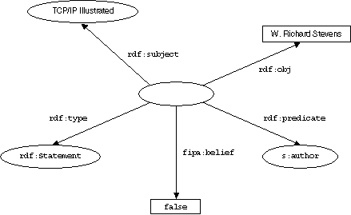
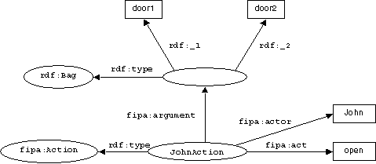
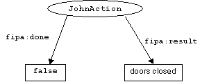
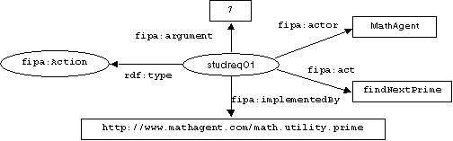
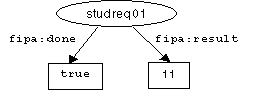

FOUNDATION FOR INTELLIGENT PHYSICAL AGENTS
FIPA RDF Content Language Specification
|
Document title |
FIPA RDF Content Language Specification |
||
|
Document number |
XC00011B |
Document source |
FIPA TC C |
|
Document status |
Experimental |
Date of this status |
2001/08/10 |
|
Supersedes |
FIPA00003 |
||
|
Contact |
fab@fipa.org |
||
|
Change history |
|||
|
2000/08/18 |
Approved for Experimental |
||
|
2001/08/10 |
Line numbering added |
||
© 2000 Foundation for Intelligent Physical Agents - http://www.fipa.org/
Geneva, Switzerland
|
Notice |
|
Use of the technologies described in this specification may infringe patents, copyrights or other intellectual property rights of FIPA Members and non-members. Nothing in this specification should be construed as granting permission to use any of the technologies described. Anyone planning to make use of technology covered by the intellectual property rights of others should first obtain permission from the holder(s) of the rights. FIPA strongly encourages anyone implementing any part of this specification to determine first whether part(s) sought to be implemented are covered by the intellectual property of others, and, if so, to obtain appropriate licenses or other permission from the holder(s) of such intellectual property prior to implementation. This specification is subject to change without notice. Neither FIPA nor any of its Members accept any responsibility whatsoever for damages or liability, direct or consequential, which may result from the use of this specification. |
Foreword
The Foundation for Intelligent Physical Agents (FIPA) is an international organization that is dedicated to promoting the industry of intelligent agents by openly developing specifications supporting interoperability among agents and agent-based applications. This occurs through open collaboration among its member organizations, which are companies and universities that are active in the field of agents. FIPA makes the results of its activities available to all interested parties and intends to contribute its results to the appropriate formal standards bodies.
The members of FIPA are individually and collectively committed to open competition in the development of agent-based applications, services and equipment. Membership in FIPA is open to any corporation and individual firm, partnership, governmental body or international organization without restriction. In particular, members are not bound to implement or use specific agent-based standards, recommendations and FIPA specifications by virtue of their participation in FIPA.
The FIPA specifications are developed through direct involvement of the FIPA membership. The status of a specification can be either Preliminary, Experimental, Standard, Deprecated or Obsolete.More detail about the process of specification may be found in the FIPA Procedures for Technical Work. A complete overview of the FIPA specifications and their current status may be found in the FIPA List of Specifications. A list of terms and abbreviations used in the FIPA specifications may be found in the FIPA Glossary.
FIPA is a non-profit association registered in Geneva, Switzerland. As of January 2000, the 56 members of FIPA represented 17countries worldwide. Further information about FIPA as an organization, membership information, FIPA specifications and upcoming meetings may be found at http://www.fipa.org/.
Contents
2 RDF as a FIPA Content Language
3 Exchange of Rules Extensions
3.3 Exchanging Rules as Programming Code
3.4 Using Rules with FIPA Communicative Acts
4.1 RDF Schemas for FIPA RDF 0
This specification describes how the Resource Description Framework (RDF - see [W3crdf]) can be used as content language in a FIPA message. Although FIPA does not require that a content language is able to represent actions[1], a lot of communicative acts require actions in their content. Therefore, we will show how RDF schemas can be defined extending its model to express:
· Objects which are constructs that represent an identifiable entity (be it abstract or concrete) in the domain of discourse,
· Propositions which are statements expressing that some sentence in a language is true or false, and,
· Actions which try to express an activity that can be carried out by an object.
By means of existing mechanisms in RDF (schema definitions), modular RDF extensions will be proposed, based on the fipa-rdf0 content language. Those extensions will be able to tackle for example rules, logic algebra constructs, and others. These extensions can then be labelled as fipa-rdf1, fipa-rdf2, etc.
The general motivation behind this approach is to enable and ease the use of RDF Schemas emerging on the Web such as CC/PP, and to define one common standard approach here to increase the level of interoperability. The main strengths of the RDF language are in its extensibility, reusability and simplicity. Another advantage of RDF is that data and schemas are exchanged in a similar way.
The RDF model proposes the eXtensible Markup Language (XML - see [W3Cxml]) as an encoding syntax, but does not prevent anyone from using alternative encoding schemes. All fipa-rdf examples will therefore use an XML encoding, although, in principle, other encoding schemes could be used.
The RDF framework is based on an entity-relationship model. The RDF Data Modelis described by means of resources, properties and their values. A specific resource together with one or more named properties plus the values of these properties is an RDF description (a collection of RDF statements).
In addition to the RDF Data Model, the RDF Schemas (see [W3Crdfsch]) specification provides a typing system for the resources and properties used in the RDF data. It defines concepts such as classes, subclasses, properties or sub-properties. It also allows expressing constraints. Both the RDF Data Model and RDF Schema propose XML as a serialization syntax.
RDF is a "foundation for processing meta-data in the way that it provides interoperability between applications that exchange machine-understandable information." This suggests that RDF could be most useful to facilitate knowledge sharing and exchange between agents.
To be able to use RDF as a content language for FIPA ACL messages, we have to explore how objects, propositions and functions can be expressed in RDF, without endangering key extensibility inherent to the language. On the other hand, we will try to preserve RDF's simplicity, which is crucial for the success of languages on the Internet.
We suggest to use the name fipa-rdf0, for the combined use of RDF and the basic schemas which define the extensions needed for FIPA.
Taking the above into account, it is obvious to see an analogy between an ACL object and an RDF resource, since both are defined as descriptions of a certain identifiable entity. This enables us to use RDF resource identifiers and references as ACL object identifiers and references. This means that to resolve an RDF reference, we can use a the FIPA communicative act query-ref (see [FIPA00054]), which will then be followed by an 'inform' message, describing this object.
In the same context it seems logical to model ACL propositions using RDF statements. An RDF statement is composed out of three parts: subject (resource), predicate (property) and object (literal/value). As an example, consider the sentence "W. Richard Stevens is the author of TCP/IP Illustrated". The RDF components of this proposition are the subject (TCP/IP Illustrated), the predicate (Author) and the object (W. Richard Stevens). This sentence/statement can then be described in RDF in the following manner:
<?xml version="1.0"?>
<rdf:RDF xmlns:rdf="http://www.w3.org/1999/02/22-rdf-syntax-ns#"
xmlns:s="http://description.org/schema/">
<rdf:Description ID="TCP/IP Illustrated">
<s:author>W. Richard Stevens</s:author>
</rdf:Description>
</rdf:RDF>
Figure 1 represents this in RDF graph form. This way we have a starting point to state logical expressions in our content. Taking this one step further, we can say that by expressing this statement, we indicate our belief in this statement. In this way we can say that we always assume that an RDF statement expresses a belief. This approach would be sufficient in any context where the level of logic involved is limited.
Figure 1: A Proposition as an RDF Statement
To overcome this shortcoming however, we will explain how logical belief or disbelief of a certain statement could be expressed explicitly using RDF. To express that we believe a statement to be true or false, we have to model the original statement as a reified statement, that is, a resource with four predefined properties:
· The subject property identifies the resource being described by the modelled statement; that is, the value of this property is the resource about which the original statement was made.
· The predicate property identifies the property of the original statement; that is, the value is the specific property in the original statement.
· The object property identifies the property value in the original statement; that is, the value is the object in the original statement.
· The value of the type property describes the type of the new resource. All reified statements are instances of rdf:Statement.
A new resource with the above four properties represents the original statement and can both be used as the object of another statement and have additional statements made about it. The resource with these four properties is not a replacement for the original statement, but it is a model of the statement.
By extending the RDF syntax model with the following elements, a means to express belief or disbelief of a statement is allowed (the complete schema of the RDF extensions can be found in Section 4.1, RDF Schemas for FIPA RDF 1):
<?xml version="1.0"?>
<rdf:RDF xmlns:rdf="http://www.w3.org/1999/02/22-rdf-syntax-ns#"
xmlns:rdfs="http://www.w3.org/TR/1999/PR-rdf-schema-19990303#">
<rdfs:Class rdf:ID="http://www.fipa.org/schemas#Proposition">
<rdfs:label xml:lang="en">proposition</rdfs:label>
<rdfs:label xml:lang="fr">proposition</rdfs:label>
<rdfs:comment>This describes the set of propositions</rdfs:comment>
<rdfs:subClassOf rdf:resource=
"http://www.w3.org/1999/02/22-rdf-syntax-ns#Statement"/>
</rdfs:Class>
<rdfs:ConstraintProperty rdf:ID="http://www.fipa.org/schemas#belief">
<rdfs:label xml:lang="en">belief</rdfs:label>
<rdfs:label xml:lang="fr">acte</rdfs:label>
<rdfs:domain rdf:resource="#Proposition"/>
<rdfs:range rdf:resource=
"http://www.w3c.org/TR/1999/PR-rdf-schema-19990303#Literal"/>
</rdfs:ConstraintProperty>
</rdf:RDF>
Using this method we can easily describe ACL propositions in RDF. As an example, the following proposition will be modelled: "The statement 'W. Richard Stevens is the author of TCP/IP Illustrated' is true". One way to do this is as follows:
<?xml version="1.0"?>
<rdf:RDF xmlns:rdf="http://www.w3.org/1999/02/22-rdf-syntax-ns#"
xmlns:fipa=http://www.fipa.org/schemas/fipa-rdf0#">
<fipa:Proposition>
<rdf:subject>TCP/IP Illustrated</rdf:subject>
<rdf:predicate rdf:resource="http://description.org/ schema#author"/>
<rdf:object>W. Richard Stevens</rdf:object/>
<fipa:belief>true</fipa:belief>
</fipa:Proposition>
</rdf:RDF>
Expressing that the same statement is false, is equally easy by replacing the value 'true' with 'false'. The RDF graph representation of the 'false' statement is presented in Figure 2.

Figure 2: Explicit Logical Proposition in RDF
An action expresses an activity, carried out by an object. There are three different properties related to an 'action':
· An act identifies the operative part of the action; it can serve to identify the type of act or merely to describe the act. In the latter case specific types of action classes can be derived from the Action class.
· An actor identifies the entity responsible for the execution of the action, that is, the value is the specific entity which will/can/should perform the act (often the receiver, but possibly another agent/entity under "control" of the receiver).
· An argument identifies an (optional) entity which can be used for the execution of the action; that is, the value is entity which is used by the actor to perform the act. An action can have multiple arguments.
When looking at an action this way, there is a structural analogy with a RDF statement.
To model an action, the RDF syntax model can be extended with a new RDF type fipa:Action which has these properties. As an example, the following action will be modelled: "John opens door1 and door2". In this small example, the properties are the act (Open), the actor (John) and the arguments (door1 and door2). In RDF, this action can then be described as:
<?xml version="1.0"?>
<rdf:RDF xmlns:rdf="http://www.w3.org/1999/02/22-rdf-syntax-ns#"
xmlns:fipa="http://www.fipa.org/schemas/fipa-rdf0#">
<fipa:Action rdf:ID="JohnAction1">
<fipa:actor>John</fipa:actor>
<fipa:act>open</fipa:act>
<fipa:argument>
<rdf:bag>
<rdf:li>door1</rdf:li>
<rdf:li>door2</rdf:li>
</rdf:bag>
</fipa:argument>
</fipa:Action>
</rdf:RDF>
According to the RDF specification, the resource type defined in the schema corresponding to the type property can be used directly as an element name when the Description element contains a type property. So, a shorter version of the above example could be written as follows:
<?xml version="1.0"?>
<rdf:RDF xmlns:rdf="http://www.w3.org/1999/02/22-rdf-syntax-ns#"
xmlns:fipa="http://www.fipa.org/schemas#">
<fipa:Action rdf:ID="JohnAction1">
<fipa:actor>John</fipa:actor>
<fipa:act>open</fipa:act>
<fipa:argument>
<rdf:bag>
<rdf:li>door1</rdf:li>
<rdf:li>door2</rdf:li>
</rdf:bag>
</fipa:argument>
</fipa:Action>
</rdf:RDF>
The model above still lacks the ability to state whether some action has finished or what the result is of the action. this can be solved by simply adding extra properties to the description of the action.
As an example, suppose Mary requests John to open door 1 and door 2 and then wants John to inform her if he performed the action and what the result is. This little scenario exists of two messages:
· Request from Mary to John containing the description of the action, and,
· Inform from John to Mary, referring to the action and stating the completion of the action.
Using FIPA ACL combined with RDF content, the first messages could be expressed as:
(request
:sender Mary
:receiver John
:content (
<?xml version="1.0"?>
<rdf:RDF xmlns:rdf="http://www.w3.org/1999/02/22-rdf-syntax-ns#"
xmlns:fipa="http://www.fipa.org/schemas#">
<fipa:Action rdf:ID="JohnAction1">
<fipa:actor>John</rdf:actor>
<fipa:act>open</rdf:act>
<fipa:argument>
<rdf:bag>
<rdf:li>door1</rdf:li>
<rdf:li>door2</rdf:li>
</rdf:bag>
</fipa:argument>
</fipa:Action>
</rdf:RDF>)
:language fipa-rdf0)

Figure 3: Example of an Open Action
And the subsequent reply message could be:
(inform
:sender John
:receiver Mary
:content (
<?xml version="1.0"?>
<rdf:RDF xmlns:rdf="http://www.w3.org/1999/02/22-rdf-syntax-ns#"
xmlns:fipa="http://www.fipa.org/schemas#">
<rdf:Description about="#JohnAction1">
<fipa:done>true</fipa:done>
<fipa:result>doors closed</fipa:result>
</rdf:Description>
</rdf:RDF> )
:language fipa-rdf0)
Note the ability offered by RDF to include previous actions by means of a reference instead of repeating the whole action. The RDF graph representation of the complete action description is presented in Figure 3.

Figure 4: Result of an Open Action
Different possible scenarios can be distinguished between when using the RDF actions. One possible usage is when a software designer describes in documentation (that is, in the RDF schemas in rdfs:comment) what is meant by a particular action; it is left to the implementer to decide which functions will be called. In another scenario, a more explicit description of the semantics might be needed by linking the action with some programming language. This section deals with the latter case.
When an agent does not know how to perform an action and needs a more explicit representation of this action, the sender agent can specify the code which implements the action. For this purpose a new property for actions is introduced, called implementedBy, which has a resource of the type Code as property its value.
A first possibility is that the property implementedBy contains a reference (a URI) to an external software module written in a specific programming language. For this purposes the Code resource therefore has a property language and a property code-uri. For reasons of simplicity, it is assumed that the language used is either Java or a scripting language such as JScript or ECMAscript. So, the property code-uri is a reference to the location of code where the method or function can be found (for Java a code base followed by a class name).
When a Java class is referenced, code-uri can contain the Java code-base. The receiving agent can then download this class, instantiate it (if needed), and perform the required action (or not). When a non-static class is being referred, we assume that there is always a zero-argument constructor (cfr. the requirement for JavaBeans).
In addition, we assume that there always exists a one-to-one correspondence between the FIPA arguments and fipa result property, into the method's arguments resp. return value. When multiple arguments are used, and the sequence of those is important, one should use the rdf:Seq container to separate them.
As an example, suppose agent 'Student' requests agent 'Mathematician' to find the next prime following after '7'. The request message is as follows (see Figure 5):
(request
:sender Student
:receiver Mathematician
:content (
<?xml version="1.0"?>
<rdf:RDF xmlns:rdf="http://www.w3.org/1999/02/22-rdf-syntax-ns#"
xmlns:fipa="http://www.fipa.org/schemas/fipa-rdf0#">
<fipa:Action rdf:ID="studreq01">
<fipa:actor>Mathematician</fipa:actor>
<fipa:act>findNextPrime</fipa:act>
<fipa:argument>7</fipa:argument>
<fipa:implementedBy>
<fipa:Code>
<fipa:language>Java</fipa:language>
<fipa:code-uri>
http://www.mathagent.com/math.utility.prime
</fipa:code-uri>
</fipa:Code>
</fipa:implementedBy>
</fipa:argument>
</fipa:Action>
</rdf:RDF> )
:language fipa-rdf0)

Figure 5: Actions and Implementation References
In the previous example, it is assumed that there exists a function or method in the static class math.utility.prime.class with the same name of the FIPA act (findNextPrime). If the name of the method is different from the FIPA act's name, then the method name should be included after the hash sign (#) of the property value code-uri. For example:
<fipa:implementedBy>
<fipa:Code>
<fipa:language>Java</fipa:language>
<fipa:code-uri >
http://www.mathagent.com/math.utility.prime#nextPrime
</fipa:code-uri>
</fipa:Code>
</fipa:implementedBy>
The Mathematician agent could reply with:
(inform
:sender Mathematician
:receiver Student
:content (
<?xml version="1.0"?>
<rdf:RDF xmlns:rdf="http://www.w3.org/1999/02/22-rdf-syntax-ns#"
xmlns:fipa="http://www.fipa.org/schemas/fipa-rdf0#">
<fipa:Action rdf:about="#studreq01">
<fipa:done>true</fipa:done>
<fipa:result>11</fipa:result>
</fipa:Action>
</rdf:RDF>)
:language fipa-rdf0)

Figure 6: Result of the findNextPrime Action
Sometimes, multiple implementations can be associated with one specific action so the implementedBy property can contain an rdf:Alt container of Code classes. In some cases, the method implementation of the code may need to refer to values of the RDF data model and conventions are needed to establish a mapping between the RDF data and (Java) object model. Although no real standards already exist, several initiatives are taking off to define such a binding. Examples include:
· DATAX: the Java interface (see [DATAX]),
· GINF: the interfaces specified in the Generic Interoperability Framework (see [Melnik99]),
· 3AP: the RDF-Java mapping as used in Alcatel's 3AP platform, and,
· Other Java API's have been suggested on the RDF-DEV mailing lists.
The following example shows the use of the binding property:
(request
:sender agent-dealer
:receiver agent-carshop
:content (
<?xml version="1.0"?>
<rdf:RDF xmlns:rdf="http://www.w3.org/1999/02/22-rdf-syntax-ns#"
xmlns:fipa="http://www.fipa.org/schemas/fipa-rdf0#">
<fipa:Action rdf:ID="price-update1">
<fipa:actor>agent-carshop</rdf:actor>
<fipa:act>addNewPrices</rdf:act>
<fipa:implementedBy>
<fipa:Code>
<fipa:language>Java</fipa:language>
<fipa:binding>DATAX</fipa:binding>
<fipa:codeURI>
http://www.carshop.com/bin/CarStock
</fipa:codeURI>
</fipa:Code>
</fipa:implementedBy>
</fipa:Action>
</rdf:RDF> )
:language fipa-rdf0)
The file CarStock.java could look as follows:
import com.muze.datax.*;
import com.muze.datax.rdf.*;
public class CarStock {
public CarStock() { }
void addNewPrices() {
EntitySet entities = new RDFReader().read("carstock.rdf");
DATAXFactory f = new DefaultDATAXFactory();
Iterator it = entities.iterator();
while (it.hasNext()) {
Entity e = (Entity)it.next();
Property p = e.getProperty("http://www.carshop.com/schemas#price");
Float price = Float.valueOf(p.getValue());
p-new = f.createProperty(Property.ATTRIBUTE,
"newprice", 1.05*price.floatValue());
e.add(p-new);
}
}
In this example, the car dealer requests the car shop to attach new prices to their car stock: the new prices should become 5% higher than the old ones. In the Java file, the DATAX model is used to map the RDF data model into Java objects.
A second possibility is that the fipa:implementedBy property includes code which is directly embedded as a (Java) script. The property fipa:script of the resource fipa:Code can be used these for purposes. Once again, conventions are needed to map the RDF data and the Java (script) model. For an example, see Section 3.3, .
This module allows the expression and exchange of rules, based on the FIPA-RDF0 model.
Using the fipa-rdf1 language, agents can exchange knowledge about rules. An agent can inform another agent about one of its own "house" rules, but may also request to fire a particular rule on (a subset of) their knowledge base. In general, we leave it up to the implementer of the agent how to use the exchanged rules. The fipa-rdf1 builds on top of the fipa-rdf0 schemas, and provides extra schema information for expressing rules.
We will distinguish between two different approaches for dealing with rules:
An RDF rule consists of two basic components: a selection part and a manipulation part, which applies to all RDF resources contained in the selection. To express the selection, an RDF notation for this purpose is chosen. To express the manipulation part, which allows to change property values of the selected resources, we will simply use the RDF data model itself.
In order to select parts of the RDF data resources, one can use an RDF query language. No real standards do exist at the moment, but various specifications are available which define how to query/select particular RDF resources including:
· RDF Query Specification (see [W3Crdfquery]), and,
· A Query and Inference Service for RDF (see [Decker98]).
The selection results will be put in an RDF container, identified by the property fipa:selection-result of the rule. The manipulation part will then give an RDF description for all resources contained in the container of the selection results. The following is an example of an RDF encoded rule:
<?xml version="1.0"?>
<rdf:RDF xmlns:rdf="http://www.w3.org/TR/REC-rdf-syntax#"
xmlns:fipa="http://www.fipa.org/schemas/fipa-rdf1#"
xmlns:car="http://www.cars.org/schemas#"
xmlns:rdfq="http://www.w3.org/TandS/QL/QL98/pp/rdfquery.html">
<fipa:Rule rdf:ID="categorizeCars1">
<fipa:selection-result rdf:ID="speedycars"/>
<fipa:selection>
<rdfq:rdfquery>
<rdfq:From eachResource="http://www.carshop.com/res/">
<rdfq:Select>
<rdfq:Condition>
<rdfq:equals>
<rdfq:Property name="rdf:type"/>
<rdfq:String>
http://www.cars.org/schemas#Car
</rdfq:String>
</rdfq:equals>
<rdfq:greaterThan>
<rdfq:Property name="http://www.cars.org/schemas#speed"/>
<rdfq:Integer>200</rdfq:Integer>
</rdfq:greaterThan>
</rdfq:Condition>
</rdfq:Select>
</rdfq:From>
</rdfq:rdfquery>
</fipa:selection>
<fipa:manipulation>
<rdf:Description rdf:aboutEach="speedycars">
<car:category>speed-car</car:category>
</rdf:Description>
</fipa:manipulation>
</fipa:selection-result>
</fipa:Rule>
</rdf:RDF>
In the above example, first all cars are selected from all resources contained in http://www.carshop.com/res/ for which the maximum speed exceeds 200 (km/h). In the manipulation part, for all resources contained in the resulting collection, the value of the property car:category is set to speed-car.
A rule is directly expressed as some piece of code (which presumably also selects nodes, and subsequently manipulates the RDF data). For this purpose, the property fipa:implementedAs is attached to the fipa:Rule class, as the property implementedBy was attached to a fipa:Action class.
The following example states that "for all cars for which the property speed exceeds 200 (km/h), the property category should be set to race-car:
<?xml version="1.0"?>
<rdf:RDF xmlns:rdf="http://www.w3.org/TR/REC-rdf-syntax#"
xmlns:car="http://www.cars.org/schemas#"
xmlns="http://www.fipa.org/schemas/fipa-rdf1#">
<fipa:Rule rdf:ID="categorizeCars2">
<fipa:implementedAs>
<fipa:Code>
<fipa:language>ECMAScript</fipa:language>
<fipa:binding>3AP</fipa:binding>
<fipa:script>
NodeSelection selection = new NodeSelection("");
Iterator it = selection.iterator();
while (it.hasNext()) {
Node n = (Node)it.next();
if ((n.getProperty("speed").getValue() > 200) &
(n.getProperty("type").getValue().
equals("http://www.cars.org/schemas#Car")) {
n.getProperty("category").setValue("race-car");
}
}
</fipa:script>
</fipa:Code>
</fipa:implementedAs>
</fipa:Rule>
</rdf:RDF>
This script uses the 3AP APIs to map the RDF data with the Java object model.
An agent may request another agent to fire a specific rule to his knowledge base.
(request
:sender i
:receiver j
:content (
<?xml version="1.0"?>
<rdf:RDF xmlns:rdf="http://www.w3.org/TR/REC-rdf-syntax#"
xmlns="http://www.fipa.org/schemas/fipa-rdf1#">
<FireRule>
<rdf:type rdf:resource="http://www.fipa.org/schemas#Action"/>
<argument rdf:resource="#categorizeCars2">
</FireRule>
</rdf:RDF> )
:language fipa-rdf1 )
The rules engine will then have an impact on the properties of all car instances.
Another use is that an agent informs another agent about its (implicit) belief in the correctness of a rule:
(inform
:sender i
:receiver j
:content (
<?xml version="1.0"?>
<rdf:RDF xmlns:rdf="http://www.w3.org/TR/REC-rdf-syntax#"
xmlns="http://www.fipa.org/schemas/fipa-rdf1#">
<fipa:Rule about="#categorizeCars2"/>
</rdf:RDF> )
:language fipa-rdf0)
The receiving agent may then decide to apply the rule (or not).
In practice, the RDF content in a FIPA message may look quite verbose. However, this problem can be tackled in different ways:
· The RDF specification itself has been foreseen in a number of alternative 'abbreviated forms'.
· Binary encodings can be used instead, as defined by the XML Token specification (see [W3Cxml]).
· Some parts of the content can be defined in advance by unique XML identifiers (URIs) and then used in subsequent messages. This may be especially useful when the negotiation focuses only on one specific service parameter.
To support the latter mechanism of cross-referencing parts of the RDF content, we suggest the usage of the query-ref and inform (see [FIPA00046]) FIPA communicative acts.
A number of companies and organisations in the FACTS project (see [FACTS]) have used FIPA RDF as content language for agent-based provisioning of virtual private networks.
The RDF schema needed for using fipa-rdf0 (for expressing actions and propositions) is as follows:
<?xml version="1.0"?>
<rdf:RDF xmlns:rdf="http://www.w3.org/1999/02/22-rdf-syntax-ns#"
xmlns:rdfs="http://www.w3.org/TR/1999/PR-rdf-schema-19990303#">
<rdfs:Class rdf:ID="Proposition">
<rdfs:label xml:lang="en">proposition</rdfs:label>
<rdfs:label xml:lang="fr">proposition</rdfs:label>
<rdfs:subClassOf rdf:resource=
"http://www.w3c.org/1999/02/22-rdf-syntax-ns#Statement"/>
<rdfs:comment>This describes the set of propositions</rdfs:comment>
</rdfs:Class>
<rdfs:ConstraintProperty rdf:ID="belief">
<rdfs:label xml:lang="en">belief</rdfs:label>
<rdfs:label xml:lang="fr">acte</rdfs:label>
<rdfs:domain rdf:resource="#Proposition"/>
<rdfs:range rdf:resource=
"http://www.w3c.org/TR/1999/PR-rdf-schema-19990303#Literal"/>
</rdfs:ConstraintProperty>
<rdfs:Class rdf:ID="Action">
<rdfs:label xml:lang="en">action</rdfs:label>
<rdfs:label xml:lang="fr">action</rdfs:label>
<rdfs:subClassOf rdf:resource=
"http://www.w3c.org/TR/1999/PR-rdf-schema-19990303#Resource"/>
<rdfs:comment>This describes the set of actions</rdfs:comment>
</rdfs:Class>
<rdfs:ConstraintProperty rdf:ID="act">
<rdfs:label xml:lang="en">act</rdfs:label>
<rdfs:label xml:lang="fr">acte</rdfs:label>
<rdfs:domain rdf:resource="#Action"/>
</rdfs:ConstraintProperty>
<rdfs:ConstraintProperty rdf:ID="actor">
<rdfs:label xml:lang="en">actor</rdfs:label>
<rdfs:label xml:lang="fr">acteur</rdfs:label>
<rdfs:domain rdf:resource="#Action"/>
</rdfs:ConstraintProperty>
<rdfs:ConstraintProperty rdf:ID="argument">
<rdfs:label xml:lang="en">argument</rdfs:label>
<rdfs:label xml:lang="fr">argument</rdfs:label>
<rdfs:domain rdf:resource="#Action"/>
</rdfs:ConstraintProperty>
<rdfs:ConstraintProperty rdf:ID="done">
<rdfs:label xml:lang="en">done</rdfs:label>
<rdfs:label xml:lang="fr">fini</rdfs:label>
<rdfs:domain rdf:resource="#Action"/>
</rdfs:ConstraintProperty>
<rdfs:ConstraintProperty rdf:ID="result">
<rdfs:label xml:lang="en">result</rdfs:label>
<rdfs:label xml:lang="fr">resultat</rdfs:label>
<rdfs:domain rdf:resource="#Action"/>
</rdfs:ConstraintProperty>
<rdfs:ConstraintProperty rdf:ID="implementedBy">
<rdfs:label xml:lang="en">implementedBy</rdfs:label>
<rdfs:label xml:lang="fr">implemente par</rdfs:label>
<rdfs:domain rdf:resource="#Action"/>
</rdfs:ConstraintProperty>
<rdfs:Class rdf:ID="Code">
<rdfs:label xml:lang="en">code</rdfs:label>
<rdfs:label xml:lang="fr">code</rdfs:label>
<rdfs:comment>This describes the code implementation</rdfs:comment>
</rdfs:Class>
<rdfs:ConstraintProperty rdf:ID="language">
<rdfs:label xml:lang="en">language</rdfs:label>
<rdfs:label xml:lang="fr">langue</rdfs:label>
<rdfs:domain rdf:resource="#Code"/>
<rdfs:range rdf:resource=
"http://www.w3c.org/TR/1999/PR-rdf-schema-19990303#Literal"/>
</rdfs:ConstraintProperty>
<rdfs:ConstraintProperty rdf:ID="binding">
<rdfs:label xml:lang="en">binding</rdfs:label>
<rdfs:label xml:lang="fr">binding</rdfs:label>
<rdfs:domain rdf:resource="#Code"/>
<rdfs:range rdf:resource=
"http://www.w3c.org/TR/1999/PR-rdf-schema-19990303#Literal"/>
</rdfs:ConstraintProperty>
<rdfs:ConstraintProperty rdf:ID="code-uri">
<rdfs:label xml:lang="en">code-uri</rdfs:label>
<rdfs:label xml:lang="fr">code-uri</rdfs:label>
<rdfs:domain rdf:resource="#Code"/>
<rdfs:range rdf:resource=
"http://www.w3c.org/TR/1999/PR-rdf-schema-19990303#Literal"/>
</rdfs:ConstraintProperty>
<rdfs:ConstraintProperty rdf:ID="script">
<rdfs:label xml:lang="en">script</rdfs:label>
<rdfs:label xml:lang="fr">script</rdfs:label>
<rdfs:domain rdf:resource="#Code"/>
<rdfs:range rdf:resource=
"http://www.w3c.org/TR/1999/PR-rdf-schema-19990303#Literal"/>
</rdfs:ConstraintProperty>
</rdf:RDF>
The RDF schemas corresponding to fipa-rdf1 are specified as follows (extending the above schemas):
<?xml version="1.0"?>
<rdf:RDF xmlns:rdf="http://www.w3.org/1999/02/22-rdf-syntax-ns#"
xmlns:rdfs="http://www.w3.org/TR/1999/PR-rdf-schema-19990303#"
xmlns:fipa="http://www.fipa.org/schemas/fipa-rdf0#">
<rdfs:Class rdf:ID="Rule">
<rdfs:label xml:lang="en">rule</rdfs:label>
<rdfs:label xml:lang="fr">regle</rdfs:label>
</rdfs:Class>
<rdfs:ConstraintProperty rdf:ID="selection">
<rdfs:comment>The selection part </rdfs:comment>
<rdfs:domain rdf:resource="Rule"/>
</rdfs:ConstraintProperty>
<rdfs:ConstraintProperty rdf:ID="manipulation">
<rdfs:comment>The manipulation part</rdfs:comment>
<rdfs:domain rdf:resource="Rule"/>
</rdfs:ConstraintProperty>
<rdfs:ConstraintProperty rdf:ID="selection-result">
<rdfs:comment>
Identifies the container filled with selection results
</rdfs:comment>
<rdfs:domain rdf:resource="Rule"/>
<rdfs:range rdf:resource=
"http://www.w3c.org/TR/1999/PR-rdf-schema-19990303#Bag"/>
</rdfs:ConstraintProperty>
<rdfs:ConstraintProperty rdf:ID="implementedAs">
<rdfs:label xml:lang="en">implemented as</rdfs:label>
<rdfs:label xml:lang="fr">implemente comme</rdfs:label>
<rdfs:domain rdf:resource="Rule"/>
</rdfs:ConstraintProperty>
[DATAX] DATAX: Data Exchange in XML. 1999.
http://www.megginson.com/DATAX/
[Decker98] A Query and Inference Service for RDF,
Decker, S, Brickley, D, Saarela, J and Angele, J. 1998.
http://www.ilrt.bris.ac.uk/discovery/rdf-dev/purls/papers/QL98-queryservice/
[FACTS] FIPA Agent Communication Technologies
and Services (FACTS).
http://www.labs.bt.com/profsoc/facts/
[FIPA00046] FIPA Inform Communicative Act Specification. Foundation for Intelligent Physical Agents, 2000. http://www.fipa.org/specs/fipa00046/
[FIPA00054] FIPA Query Ref Communicative Act Specification. Foundation for Intelligent Physical Agents, 2000. http://www.fipa.org/specs/fipa00054/
[Melnik99] Generic Interoperability Framework (GINF) Working Paper, Melnik, S. Stanford University, 1999.
[W3Crdf] Status for Resource Description
Framework (RDF) Model and Syntax Specification
(Proposed Recommendation). World Wide Web Consortium, 1999.
http://www.w3.org/TR/REC-rdf-syntax/
[W3Crdfquery] RDF Query Specification (Technical
Contribution). World Wide Web Consortium, 1998.
http://www.w3.org/TandS/QL/QL98/pp/rdfquery.html
[W3Crdfsch] Resource Description Framework (RDF)
Schema Specification 1.0 (Candidate Recommendation). World Wide Web Consortium,
2000.
http://www.w3.org/TR/rdf-schema/
[W3Cxml] Extensible Markup Language (XML) 1.0
Specification (Recommendation). World Wide Web Consortium, 1998.
http://www.w3c.org/TR/REC-xml/